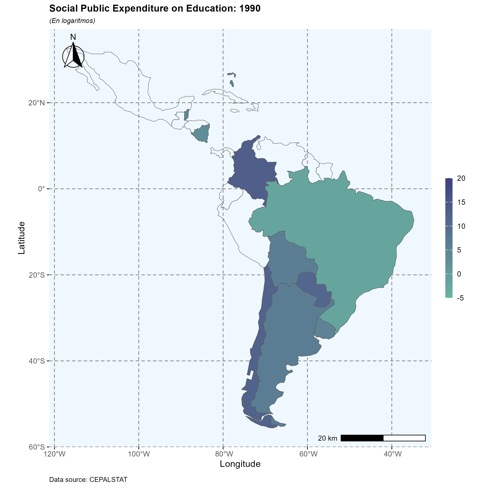

Gasto educativo en el contexto regional
Mapas originales de gasto educativo en América Latina, incluida Bolivia. Seleccione una gestión para consultar la figura publicada.

Mapas originales de gasto educativo en América Latina, incluida Bolivia. Seleccione una gestión para consultar la figura publicada.
